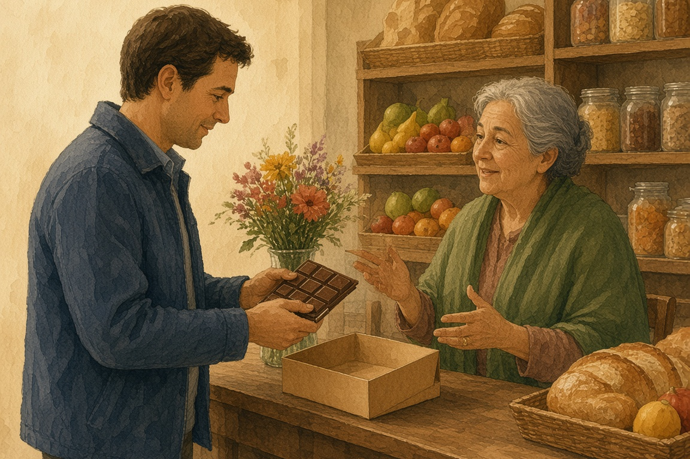

- B1
- Visitas e invitaciones
¿Qué llevo a tu casa?
Teresa invita en Bogotá, y aparece la pregunta de siempre: ¿llego con las manos vacías?
Texto
El viernes, Teresa me invitó a su casa, en Bogotá. Cuando terminó la llamada, me quedé con una pregunta en la cabeza: ¿qué llevo?
En Estados Unidos, a veces llego con las manos vacías, o llevo una botella de vino si la cena es formal. Pero Teresa es colombiana, y no quería equivocarme en la puerta. Por la tarde entré a una tienda y miré flores, chocolates y un pastel. La vendedora sonrió: «Depende de la familia. Lo importante es no llegar vacío, y tampoco hacer una escena». Yo casi compré un ramo enorme. Al final no lo hice: un gesto grande puede resultar incómodo.

Cuando era más joven, yo pensaba que existía una regla única para todos los países. No es así. En muchas casas de América Latina y de España, un invitado llega con algo pequeño: un postre, pan, vino o flores. En otras, la anfitriona dice «no debías traer nada» y, aun así, agradece el gesto. Un primo mío, en Madrid, suele llevar vino. Una amiga en Lima prefiere frutas o un postre. El detalle cambia; la idea es la misma: no llegar con las manos vacías, si puedes.
Esa noche llevé un pastel de naranja y un café bueno. Teresa abrió los ojos y después se rió: «¡Qué lindo! Siempre digo que no hace falta, pero me encanta». Nos sentamos, hablamos mucho y el pastel duró poco. Al día siguiente le escribí para agradecer la noche. Ahora, cuando me invitan, no busco la regla de oro. Pregunto con naturalidad, o llevo algo simple y fácil de compartir. El regalo no es una prueba ni un precio de entrada. Es una manera de decir: gracias por abrirme la puerta.